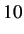
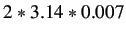
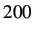

Next: Conducting Sine Test on Up: sbhs-new-manual Previous: Discussion
We have used Scilab and Xcos as an interface for sending and receiving data. Xcos diagram is shown in figure 4.1. The heater current is varied sinusoidally. They are given in percentage of maximum. These inputs can be varied by setting the properties of the input block's properties in Xcos. A provision is made to set the parameters related to it like frequency, amplitude and offset. The temperature profile thus obtained is the output. In this experiment we are applying a sine change in the heater current by keeping the fan speed constant. After application of sine change, wait for sufficient amount of time to allow the temperature to reach a steady-state. The plots of their amplitude versus number of collected samples are also available on the scope windows. The output temperature profile, as read by the sensor, is also plotted. The data acquired in the process is stored on the local drive and is available to the user for further calculations.
In the sine_test.xcos file, open the sinusoid generator block's parameters to set the value of sine magnitude and frequency. For the experiment results shown, we have chosen Magnitude = , Frequency = . Note that the frequency is to be put in rad/sec. We keep the Phase = 0. There is also a provision to give the sine input with an offset in amplitude. This can be set using the Offset block. We have choosen offset of 20. The time at which the sine input is given after the experiment is started can also be set. This can be done using the Initial Time block. Open the Initial Time block's parameters. To make the sine input appear after 200 samples of start of the experiment, keep Step time = , Initial Value = 0 and Final Value = . The initial value and final value will never change for any other value of step time.
The sine test data file will be saved in Sine_Test folder. The name of the file will be the date and time at which the experiment was conducted. A sample data file is provided in the same folder. The sample data file is named as sine-data-local.txt and sine-data-virtual.txt. Refer to the one depending on wheather you are performing a local or a virtual experiment. Referring to the data file thus obtained as shown in table 4.1, the first column in this table denotes samples. The second column in this table denotes heater in percentage. It starts at 20 and then varies sinosoidally. The third column denotes the fan in percentage. It has been held constant at 50 percent. The fourth column refers to the value of temperature. The fifth column denotes time stamp. The virtual data file will have four time stamp columns apart from first 3 columns. These four time stamp columns are client departure, server arrival, server departure and client arrival. These can be used for advanced control algorithms. These additional time stamps exist in virtual mode because of the presense of network delay.